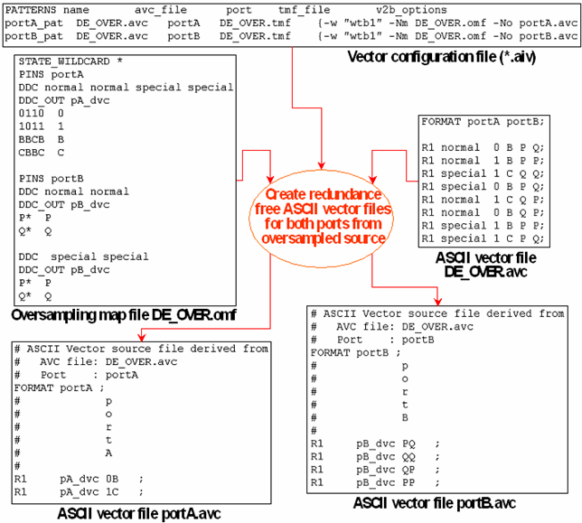

Performing the Conversion
The conversion process is controlled by two v2b parameters as specified in the following table:
v2b parameters |
Effects |
|---|---|
-Nm <oversamp_map_file> |
This parameter causes v2b to discard oversampled data (or more generally, to perform the conversion) for the specified port, and determines the oversampling map file. |
-No <ASCII_output_file> |
This parameter specifies an ASCII vector output file for the respective port. If you omit this parameter, no ASCII output file will be generated for this port. |
The following example is intended to illustrate the full power of the conversion mechanism:
